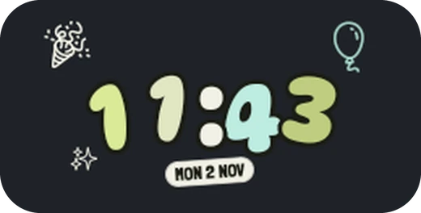
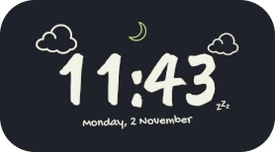
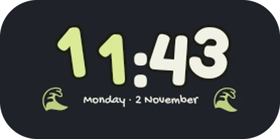
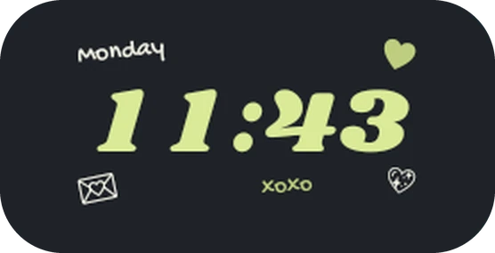
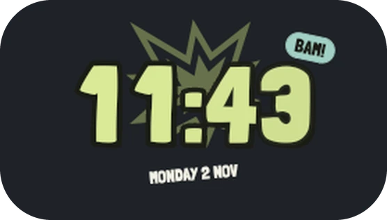

XMorph
Clock
Animated, morphing lockscreen clocks you can build yourself.





Your lockscreen, your clock.
- A face for every mood
- Expressive, playful, analog, elegant, graphic and digital styles, ready to apply or remix.
- Digits that move
- Each minute rolls, flips, fades or slides in. The clock flows between its large and small size as notifications arrive.
- A calm Always-on Display
- Every element picks its own AOD look: thin, outlined, dimmed, monochrome or hidden. Burn-in shift is built in.
- Weather and widgets
- Conditions, battery, steps, data usage and tappable toggles. Weather works without an account.
- Anything, anywhere
- Add text with live values, icons, photos, rings and bars. Drag, resize and restack them for each state.
- Depth effect
- The subject of your wallpaper can sit in front of the clock, with adjustable opacity.
Android 12 and up.
- 12
- 13
- 14
- 15
- 16
- 17
Pixel phones and custom ROMs that keep Google's lockscreen. Skins with their own lockscreen, such as One UI, HyperOS or ColorOS, are not supported.
Set it up.
- You need root (Magisk, KernelSU or APatch) and an Xposed framework with the modern API, such as LSPosed or Vector.
- Install the latest APK from Releases.
- Enable XMorph Clock in your Xposed manager with System UI in its scope.
- Allow root for XMorph Clock. Magisk asks on first launch; in KernelSU and APatch, allow it in the manager first.
- Restart System UI from the Status screen, then lock your phone.